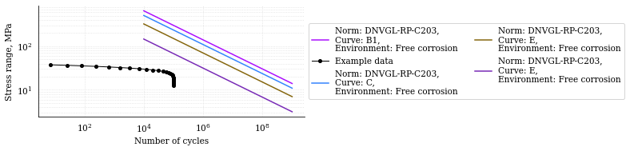
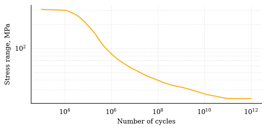

2. SN curve
The first reference to the fatigue of metals dates to 1829 when Poncelet, a French military engineer, used the adjective "tired" to describe steels under stress and assumed that steel components experience a decrease of durability when they undergo repeated variable loads. In 1837, the first document in history relating to a fatigue test was published. The test was recorded by Albert a German mining administrator, and it was aimed to understand the causes of the failure of the conveyor chains in the Clausthal mines in 1829. In 1843, Rankine and York focused their attention on railway axles, thanks to the establishment of the Her Majesty's Railway Inspectorate instituted because of the increasing number of accidents, amongst which the so-called Versailles disaster, where almost 60 people lost their lives because of the failure of the axle tree of the first engine on 5 October 1842. Anyway, the term fatigue was coined only in 1854 by the Englishman Braithwite, who discussed the fatigue failures of multiple components as water pumps, brewery equipment, and of course, railway axles. Many other English and German studies on the deterioration of railway axles were made in those years, but the work of Wöhler, Royal \"Obermaschinenmeister\" of the \"Niederschlesisch-Mährische\" Railways in Frankfurt an der Oder, was the milestone paving the way for the modern conception of fatigue testing and interpretation of results. In 1858 and 1860, August Wöhler measured, for 22 000 km, the service loads of railway axles with deflection gages personally developed and from his studies concluded that "If we estimate the durability of the axles to be 200,000 miles with respect to wear of the journal bearings, it is therefore only necessary that it withstands 200,000 bending cycles of the magnitude measured without failure." Such statement represents the first suggestion for a safe life design philosophy with retirement time (or distance travelled). Wöhler then calculated the stresses deriving from service loads and concluded that the higher the stress amplitude is, the more detrimental influence on the axle will be, plus a tensile mean stress anticipates the rupture. Furthermore, he even stated that a replacement of the axle would have been necessary if radial flaws propagated up to 20 mm into the material, and this procedure could be interpreted as an ancestor of the flaw tolerant safe life methodology. Anyway, test results of Wöhler were tabulated and not plotted until 1875, when Spangenberg adopted unusual linear axes to present these data. Furthermore, stress versus number of cycles (S/N) curves were addressed as Wöhler curves only in 1936 by Kloth and Stroppel. The idea to plot many fatigue test data, including the 60-year-old experiments of Wöhler, in logarithmic axes and interpolate them with a power law is from 1910 by Basquin. The equation relating maximum or alternate stress with the number of cycles is
where:
- \(N\) = predicted number of cycles to failure for stress range Δσ;
- \(\Delta \sigma\) = stress range with unit MPa;
- \(m\) = negative inverse slope of S-N curve;
- \(\log \left( \bar{a} \right)\) = intercept of log N-axis by S-N curve.
a. Multiple SN curves
Note
In this example we define four SN curves for free corrosion as per DNVGL-RP-C203 and plot them using matplotlib and ECharts. We additionally define a random Gaussian stress range-cycles history to plot against the SN curves defined.
#SN curves definition
b1_c = sn.SNCurve(
slope=3, # SNCurve can handle multiple slope and
intercept=12.436, # intercept types, as long as their sizes
norm='DNVGL-RP-C203', # are compatible. The slope and intercept
environment='Free corrosion', # attribute will be stored as numpy arrays.
curve='B1'
)
c_c = sn.SNCurve(
[3],
12.115,
norm='DNVGL-RP-C203',
environment='Free corrosion',
curve='C'
)
e_c = sn.SNCurve(
3,
intercept=[11.533,],
norm='DNVGL-RP-C203',
environment='Free corrosion',
curve='E'
)
w3_c = sn.SNCurve(
[3],
intercept=[10.493,],
norm='DNVGL-RP-C203',
environment='Free corrosion',
curve='E'
)
This check on slopes and intercepts shows that they are always stored as numpy 1darrays.
Input:
print(f'b1_c.slope: {b1_c.slope}, b1_c.intercept: {b1_c.intercept}')
print('type(b1_c.slope): {0}, type(b1_c.intercept): {1}'.format(
type(b1_c.slope), type(b1_c.intercept)
)
)
print(f'c_c.slope: {c_c.slope}, c_c.intercept: {c_c.intercept}')
print('type(c_c.slope): {0}, type(c_c.intercept): {1}'.format(
type(c_c.slope), type(c_c.intercept)
)
)
print(f'e_c.slope: {e_c.slope}, e_c.intercept: {e_c.intercept}')
print('type(e_c.slope): {0}, type(e_c.intercept): {1}'.format(
type(e_c.slope), type(e_c.intercept)
)
)
print(f'w3_c.slope: {w3_c.slope}, w3_c.intercept: {w3_c.intercept}')
print('type(w3_c.slope): {0}, type(w3_c.intercept): {1}'.format(
type(w3_c.slope), type(w3_c.intercept)
)
)
Output:
b1_c.slope: [3], b1_c.intercept: [12.436]
type(b1_c.slope): <class 'numpy.ndarray'>, type(b1_c.intercept): <class 'numpy.ndarray'>
c_c.slope: [3], c_c.intercept: [12.115]
type(c_c.slope): <class 'numpy.ndarray'>, type(c_c.intercept): <class 'numpy.ndarray'>
e_c.slope: [3], e_c.intercept: [11.533]
type(e_c.slope): <class 'numpy.ndarray'>, type(e_c.intercept): <class 'numpy.ndarray'>
w3_c.slope: [3], w3_c.intercept: [10.493]
type(w3_c.slope): <class 'numpy.ndarray'>, type(w3_c.intercept): <class 'numpy.ndarray'>
Defining a normally distributed fatigue spectrum
# Seed random number generator
np.random.seed(1)
# Generate some integers shifted so that their minimum is certainly >0
random_nums = np.random.normal(scale=3, size=100000)
random_ints = np.round(random_nums + 2 * np.max(random_nums))
bins = np.arange(start=min(random_ints), stop = max(random_ints) + 1)
hist = np.histogram(
random_ints,
bins=bins,
)
cycles = hist[0][::-1] # sorted from highest bin to lowest
cumulative_cycles = np.cumsum(cycles)
stress_range_bins = ((hist[1][1:] + hist[1][:-1]) / 2)[::-1]
Matplotlib
#Plot
fig, ax = b1_c.plot(
cycles=cumulative_cycles,
stress_range=stress_range_bins,
dataset_name="Example data"
)
c_c.plot(fig=fig, ax=ax)
e_c.plot(fig=fig, ax=ax)
w3_c.plot(fig=fig, ax=ax)
plt.legend()

Interactive ECharts view
Reuse the figure above to keep the four curves and the example data in one chart.
from py_fatigue.plotting import to_echarts
to_echarts(fig).render("sn-curves.html")
For one curve, use b1_c.echarts(cycles=cumulative_cycles,
stress_range=stress_range_bins, dataset_name="Example data"). The
echarts() method replaces plotly() and returns a pyecharts chart
with render() and render_embed() methods.
b. SN curves methods
Note
In this example we define two SN curves and we will see how the following methods work:
- get_cycles()
- get_stress()
- get_knee_cycles()
- get_knee_stress()
# SN curve definition
s = sn.SNCurve([3, 5], [10.970, 13.617], endurance=1e11)
Asking to print the following:
# prints
print(s.get_cycles(100)) # Get nr of cycles for stress_range = 100 MPa
print(s.get_stress(1E6)) # Get nr of cycles for 1 million cycles
print(s.get_knee_cycles()) # Get nr of cycles where there is/are knee(s)
print(s.get_knee_stress()) # Get stress(es) where there is/are knee(s)
print(s.get_stress(s.endurance)) # Get stress at endurance (1e11 cycles)
Gives:
93325.43007969948
45.35933372579283
[9988493.69936506]
[21.06201899]
3.3373365130514894
Asking back the number of cycles at endurance shall return Inf instead.
Input:
print(s.get_cycles(s.endurance_stress)) # Get cycles at endurance stress.
Output:
inf
c. SN curve interpolation
Note
This function has been added from version 1.2.0.
It is now possible to build a piecewise py-fatigue SN curve from a set of \"knee points\". The class method pyfatigue.sn.SNCurve.from_knee_points will pass through all the knee points.
Warning
The function does not perform a curve fit, rather it interpolates the points through the following piecewise linear (in log space) function:
Solving by \(\log(\Delta \sigma)\):
retrievs the well-known interpolation formula:
where \(M = - \frac{1}{m}\) and \(Q = \frac{1}{m} \cdot \log(\bar{a})\).
Input:
knee_points = """
10, 320
1_000, 308
5_039, 303
11_771, 299
23_357, 275
39_967, 250
73_176, 213
119_377, 182
207_880, 150
350_376, 119
553_241, 101
963_397, 86
1_733_270, 74
3_221_789, 65
7_525_202, 56
15_937_828, 50
32_671_572, 45
73_861_998, 41
172_521_054, 37
430_133_471, 34
1_182_699_719, 32
2_673_778_988, 30
5_850_681_784, 28
13_665_563_053, 26
28_013_567_611, 25
53_798_384_034, 24
121_624_268_965, 23
"""
# Convert the string data to a list of lists
knee_points_list = [list(map(float, line.split(',')))
for line in knee_points.strip().split('\n')]
knee_points_list = np.array(knee_points_list)
curve_fkp = pf.SNCurve.from_knee_points(
knee_stress=knee_points_list[:,1],
knee_cycles=knee_points_list[:,0],
endurance=1E11,
norm="Custom",
curve="From Knee Points",
environment="Interpolated",
)
curve_fkp.plot()
Output:
